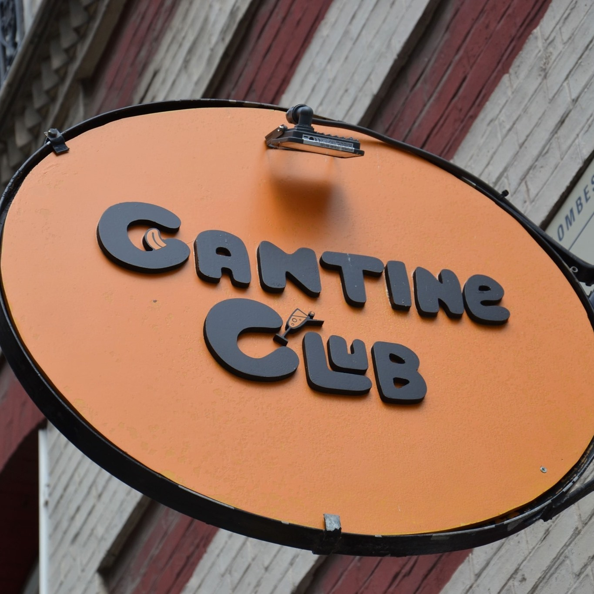

Le Cantine Club veut mettre en avant l'idée de cantine et tout ce qu'il entoure : populaire et également l'idée de club pour de rencontres convivial.
Cantine Club Les Vallées est un restaurant qui propose du street-food classique et végétale situé à Colombes, dans les Hauts-de-Seine. Il a vu le jour il y a quelques mois.

Le Cantine Club veut mettre en avant l'idée de cantine et tout ce qu'il entoure : populaire et également l'idée de club pour de rencontres convivial.
Les produits sont frais et fait maison.

Une ambiance unique.